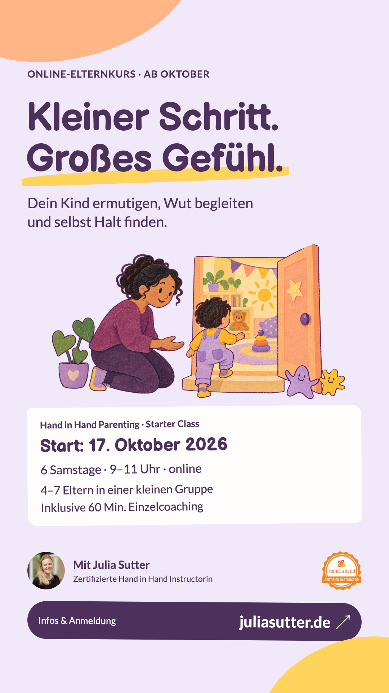
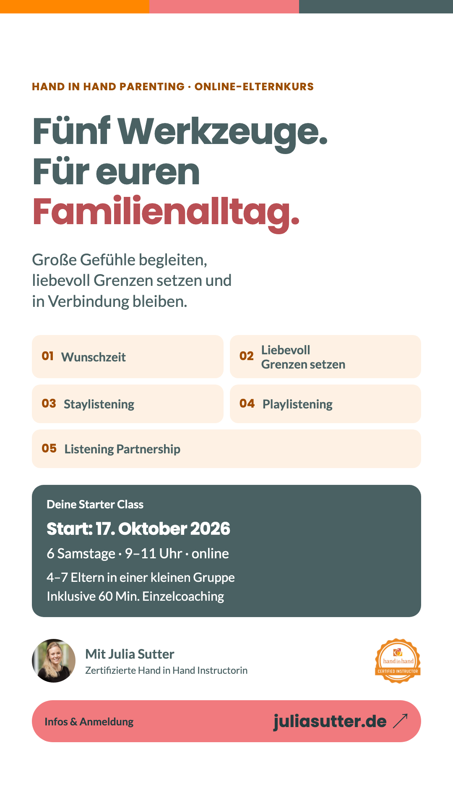
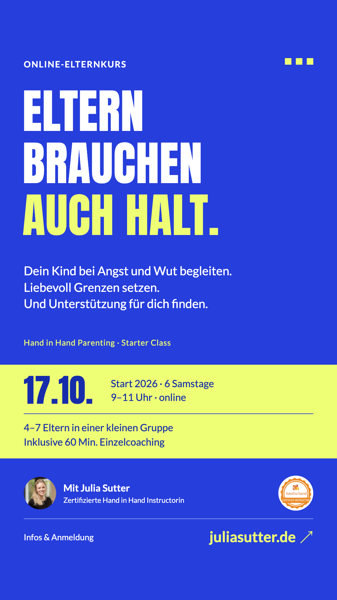

1 · Spielerische Papierwelt

Lavendel, Papiercollage und Bilderbuchschrift. Ein kleiner Schritt darf sich groß anfühlen.
Jeweils 1080 × 1920 Pixel · WhatsApp-Status & Direktversand

Lavendel, Papiercollage und Bilderbuchschrift. Ein kleiner Schritt darf sich groß anfühlen.

Aus dem offiziellen Webauftritt abgeleitet: Poppins, Lato, Petrolgrau, Koralle und klare Inhaltskarten.

Ein direktes Plakat in Ultramarin und Signalgelb. Der Kursinhalt trägt die Gestaltung.
Entwurf 2 ist vom offiziellen Hand-in-Hand-Webauftritt abgeleitet. Ein öffentlicher Markenleitfaden wurde bei der Recherche nicht gefunden. Illustration in Entwurf 1: fiktiv, mit KI erzeugt. Julia ist in allen drei Entwürfen nur als kleine Absenderin sichtbar.